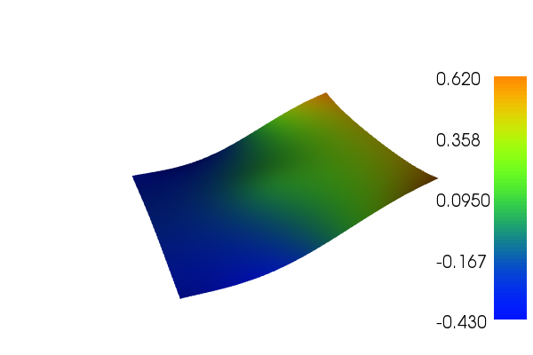

Poisson equation with pure Neumann boundary conditions¶
This demo is implemented in a single Python file,
demo_neumann-poisson.py, which contains both the
variational form and the solver.
This demo illustrates how to:
- Solve a linear partial differential equation with Neumann boundary conditions
- Use mixed finite element spaces
The solution for \(u\) in this demo will look as follows:
{kind=link}
Equation and problem definition¶
The Poisson equation is the canonical elliptic partial differential equation. For a domain \(\Omega \subset \mathbb{R}^n\) with boundary \(\partial \Omega\), the Poisson equation with particular boundary conditions reads:
Here, \(f\) and \(g\) are input data and \(n\) denotes the outward directed boundary normal. Since only Neumann conditions are applied, \(u\) is only determined up to a constant \(c\) by the above equations. An additional constraint is thus required, for instance:
This can be accomplished by introducing the constant \(c\) as an additional unknown (to be sought in \(\mathbb{R}\)) and the above constraint expressed via a Lagrange multiplier.
We further note that a necessary condition for the existence of a solution to the Neumann problem is that the right-hand side \(f\) satisfies
This can be seen by multiplying by \(1\) and integrating by parts:
This condition is not satisfied by the specific right-hand side chosen for this test problem, which means that the partial differential equation is not well-posed. However, the variational problem expressed below is well-posed as the Lagrange multiplier introduced to satisfy the condition \(\int_{\Omega} u \, {\rm d} x = 0\) effectively redefines the right-hand side such that it safisfies the necessary condition \(\int_{\Omega} f \, {\rm d} x = - \int_{\partial\Omega} g \, {\rm d} s\).
Our variational form reads: Find \((u, c) \in V \times R\) such that
\(V\) is a suitable function space containing \(u\) and v, :math:and \(R\) is the space of real numbers.
The expression \(a(\cdot, \cdot)\) is the bilinear form and \(L(\cdot)\) is the linear form.
Note that the above variational problem may alternatively be expressed in terms of the modified (and consistent) right-hand side \(\tilde{f} = f - c\).
In this demo we shall consider the following definitions of the domain and input functions:
- \(\Omega = [0, 1] \times [0, 1]\) (a unit square)
- \(g = - \sin(5x)\) (normal derivative)
- \(f = 10\exp(-((x - 0.5)^2 + (y - 0.5)^2) / 0.02)\) (source term)
Implementation¶
This description goes through the implementation in
demo_neumann-poisson.py of a solver for the above
described Poisson equation step-by-step.
First, the dolfin module is imported:
from dolfin import *
We proceed by defining a mesh of the domain. We use a built-in mesh
provided by the class UnitSquareMesh. In order to create a mesh consisting of
\(64 \times 64\) squares, we do as follows:
# Create mesh
mesh = UnitSquareMesh.create(64, 64, CellType.Type.quadrilateral)
Next, we need to define the function space.
# Build function space with Lagrange multiplier
P1 = FiniteElement("Lagrange", mesh.ufl_cell(), 1)
R = FiniteElement("Real", mesh.ufl_cell(), 0)
W = FunctionSpace(mesh, P1 * R)
The second argument to FunctionSpace specifies underlying
finite element, here a mixed element is obtained by * operator.
Now, we want to define the variational problem, but first we need to
specify the trial functions (the unknowns) and the test functions.
This can be done using
TrialFunctions
and TestFunctions. It only remains to define
the source function \(f\), before we define the bilinear and
linear forms. It is given by a simple mathematical formula, and can
easily be declared using the Expression class. Note that the string
defining f uses C++ syntax since, for efficiency, DOLFIN will
generate and compile C++ code for these expressions at run-time. The
following code shows how this is done and defines the variational
problem:
# Define variational problem
(u, c) = TrialFunction(W)
(v, d) = TestFunctions(W)
f = Expression("10*exp(-(pow(x[0] - 0.5, 2) + pow(x[1] - 0.5, 2)) / 0.02)", degree=2)
g = Expression("-sin(5*x[0])", degree=2)
a = (inner(grad(u), grad(v)) + c*v + u*d)*dx
L = f*v*dx + g*v*ds
Since we have natural (Neumann) boundary conditions in this problem, we do not have to implement boundary conditions. This is because Neumann boundary conditions are default in DOLFIN.
To compute the solution we use the bilinear form, the linear forms,
and the boundary condition, but we also need to create a
Function to store the
solution(s). The (full) solution will be stored in w, which we
initialize using the
FunctionSpace
W. The actual computation is performed by calling
solve. The separate components
u and c of the solution can be extracted by calling the split
function. Finally, we output the solution to a VTK file to examine the result.
# Compute solution
w = Function(W)
solve(a == L, w)
(u, c) = w.split()
# Save solution in VTK format
file = File("neumann_poisson.pvd")
file << u